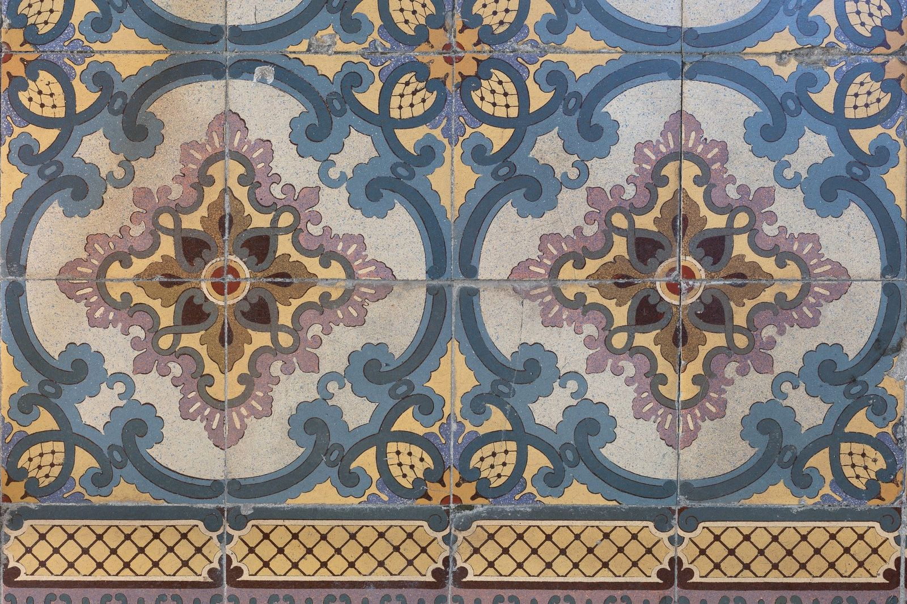
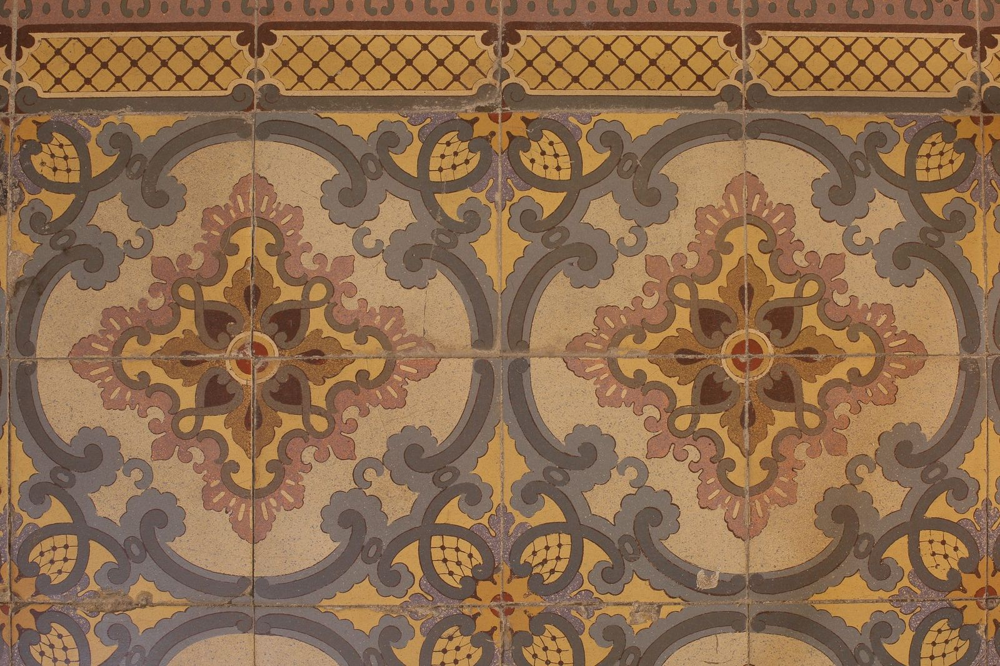
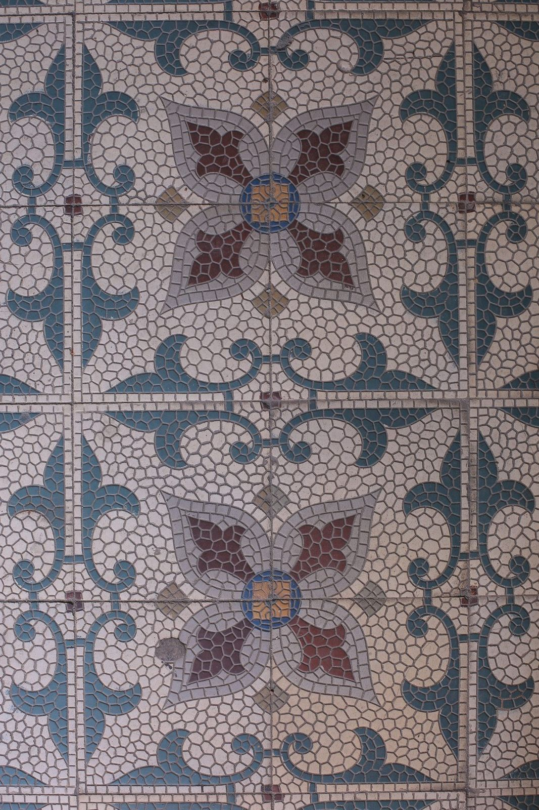
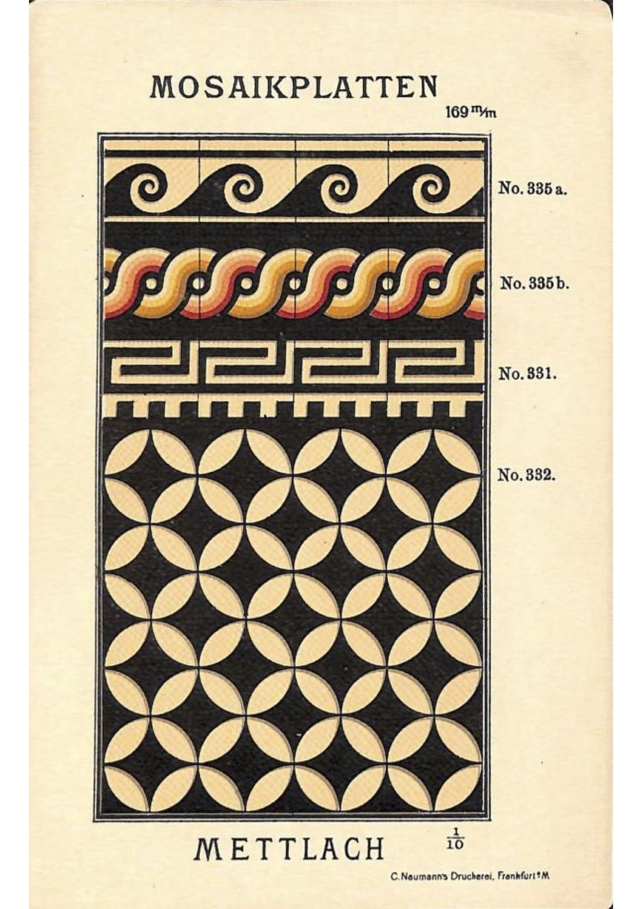

Метлахская плитка

Рисунок метлахской плитки не наносится печатью на поверхность — он сформирован в глубоком лицевом слое и не исчезает при истирании.
Реставрация и воспроизведение
Преимуществом «Паллады» является совмещение реставрационного и производственного опыта: наши специалисты могут обследовать, отдефектовать и сохранить максимально возможный процент исторического напольного покрытия, а также изготовить любое необходимое количество (от одного до нескольких тысяч квадратных метров) плитки по историческим образцам с сохранением исторической технологии, с учетом всех особенностей: цвета, рисунка, толщины и пр.
Как изготавливается
Готовая плитка может быть как с глубоко окрашенным верхним слоем, так и прокрашена на всю толщину. Изготавливается по исторической технологии методом сухого прессования, не имеет дополнительного декоративного покрытия и обжигается на высокую температуру до практически нулевого спекания, что определяет ее безусловно высокие эксплуатационные характеристики.
В распоряжении «Паллады» значительное количество оснасток различных типоразмеров, в том числе и с рисунком, а также отработанная технология производства подобных оснасток и вкладышей в них, что позволяет производить метлахскую плитку в сжатые сроки.
История
Несколько вариаций технологии производства подобной — особенно прочной и износостойкой напольной плитки, с рисунком (иногда — с рельефом) — были разработаны в середине XIX века. Изготовленная методом прессования, с глубоко окрашенным верхним слоем, в отличие от плитки с печатным рисунком или цементной, она не истирается даже при интенсивном использовании. Такие плитки начали производить в Англии, Германии, США. Затем производства, использующие близкую технологию, появились и в России. Признанным мировым лидером являлась фирма Villeroy & Boch, находившаяся в немецком городе Метлах. Со временем название «метлахская плитка» даже стало использоваться как нарицательное — для обозначения схожей по характеристикам малоформатной керамической напольной плитки, а не только произведенной непосредственно в Германии.
Узоры и образцы


